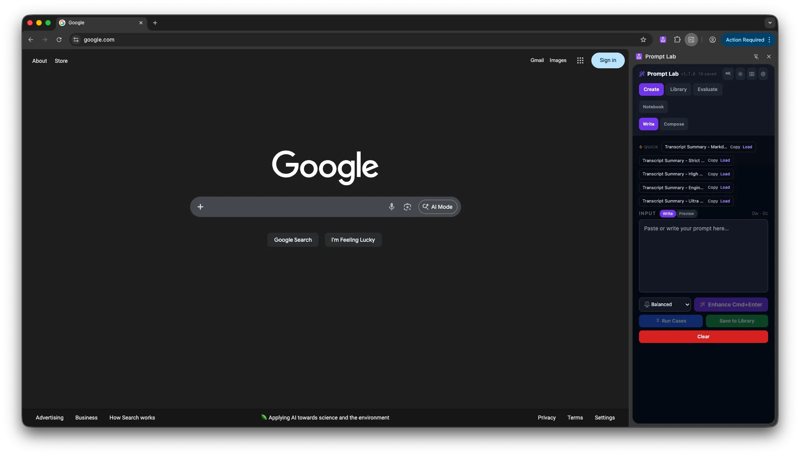

Live-show operators
Run a show
Set the show context in the AV console, track readiness, and open the right tool for each phase, from advance to strike.
Built and maintained by Dave Robertson
Offline-capable browser tools for live-show crews, a prompt-engineering workbench, and agents and widgets for Notion. Built by a live-event and broadcast technologist.
Browser AV tools that keep working offline
Notion AI agents, set up with Dave
Notion widgets, free and open source
Enhancement modes in Prompt Lab
Live-show operators
Set the show context in the AV console, track readiness, and open the right tool for each phase, from advance to strike.
Anyone writing prompts
Write, enhance, score, and compare prompts in a browser sidebar or the web app, and keep the good ones in a library.
Notion workspaces
Agents, embeddable widgets, skills, and prompt systems that live inside Notion instead of another app.
Clients and partners
Live-event, broadcast, and systems work. Read the background and the domains Dave works in, then get in touch.
Each one stands on its own. Pick the one that fits the work.
Live shows
Browser tools for live-show operators: planning, patching, timing, cueing, and run-of-show. Save your work in the browser and keep going without a connection.
Web · extension · source build
A prompt-engineering workbench in your browser sidebar. Write, enhance, score, compare, and organize prompts. The hosted web app requires sign-in.
Workspace
AI agents that run on Notion AI for triage, briefings, and formatting, plus widgets you embed in any page for live dashboards.

Prompt Lab
Seven enhancement modes, live quality scoring, and a prompt library stored in your browser. A/B Compare is part of the optional Pro plan.
AV by Dave
Cue Sheet runs the rundown with preview, playback, and print or CSV export. Show Advance collects contacts, access, schedule, power, network, and open questions before you arrive.
Notion agent
Scheduled inbox triage for Notion. It classifies new entries, applies your routing rules, and leaves a short review queue.
Project Registry
A public-safe list of active repositories with their stack, status, and recent activity.
Profile
Live events, broadcast, and systems work: the experience these tools come from.
Privacy
Most pages are plain HTML served from GitHub Pages.
Each tool starts from a real job and is built to get out of the way once you know it.
AV tools run in the browser and keep working offline. Notion agents run on Notion AI, and widgets embed in a Notion page.
AV tools save to your browser and export to files you keep. Nothing here needs an account on this site.
Use one tool, or pass show details from one AV tool to the next. Every handoff asks before it imports anything.
AV tools and widgets are free. Prompt Lab has a free editor and an optional Pro plan at $9/month.